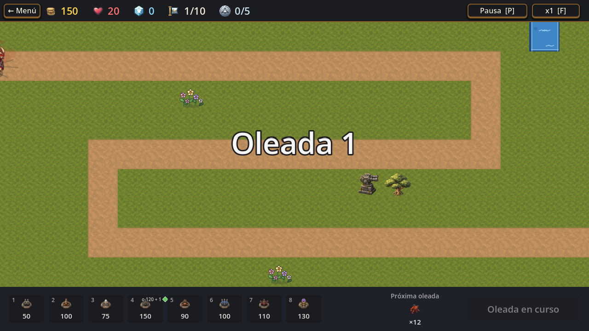
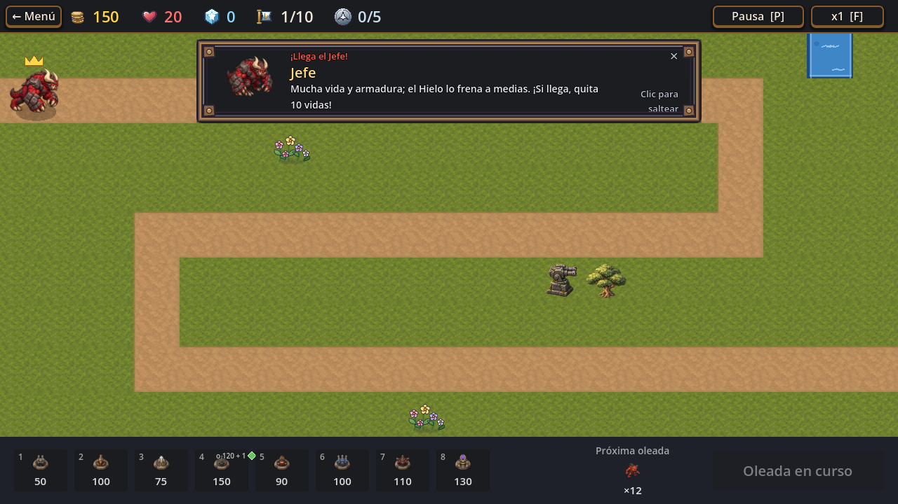
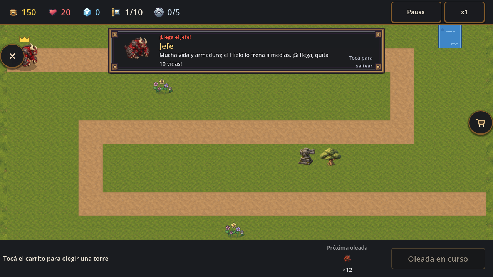
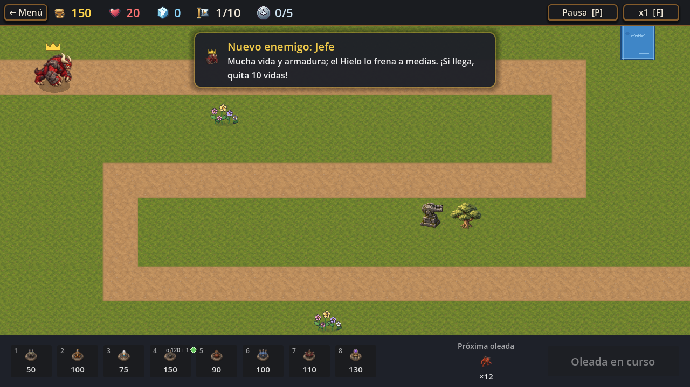
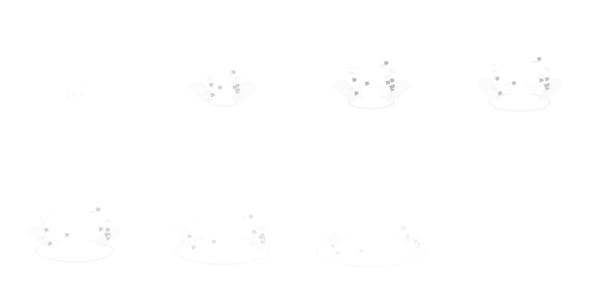

Qué es el «jefe viejo»
Es lo que hoy ocurre cuando llega el Jefe de la oleada 10 del nivel 1. Son capturas reales del juego (modo PC y celular) sacadas de main. Tres piezas, todas no aprobadas como concepto final; la presentación nueva (pantalla completa, 3 o 5 s, que pausa) las va a reemplazar.
1 · El destello y la grieta en la entrada del camino
En el instante en que nace el Jefe, sale un destello con una grieta en el suelo, en la entrada del camino (a la izquierda). Es chico y dura 0,7 s. En la captura se ve en el borde izquierdo, junto al Jefe.

2 · El cartel «¡Llega el Jefe!» con su marco
Un cartel horizontal arriba con el retrato, el nombre, un consejo y «Clic para saltear». El marco dorado con remaches es el arte «marco 9-slice». No pausa la partida: es lo que no te gustó (querías una secuencia a pantalla completa).

En celular (misma pieza):

3 · La tarjeta «Nuevo enemigo» que sale después
Esta no es del concepto viejo: ya existía y sigue después de la presentación nueva (decidiste que se mantenga).

Los tres archivos de arte (en assets/sprites/effects/jefe/)
8 cuadros del destello. Es casi blanco porque el juego lo tiñe con el color del enemigo; acá, sobre fondo oscuro.

La grieta en el suelo.
El marco del cartel.

Y el código
Son tres archivos que dibujan y animan esas piezas: scenes/effects/boss_entrance_burst.gd (el destello), scenes/ui/boss_entrance_card.gd (el cartel) y scripts/data/boss_entrance_config.gd con data/ui/entrada_jefes.json (tiempos y tamaños). Más la opción «Entrada de los jefes» de Opciones.
Qué hacemos con esto: nada por ahora. Siguen funcionando como piloto en el nivel 1 hasta que se implemente la presentación nueva; en ese momento se borran, o se rescata lo útil (la cola de mensajes y la opción).
Capturas: tools/capture_boss_entrance.tscn, 2026-10-23, sobre main en 7fb870d. No se midió rendimiento.